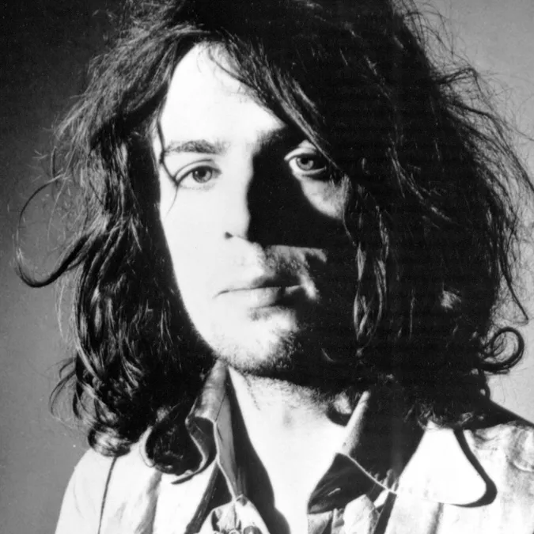
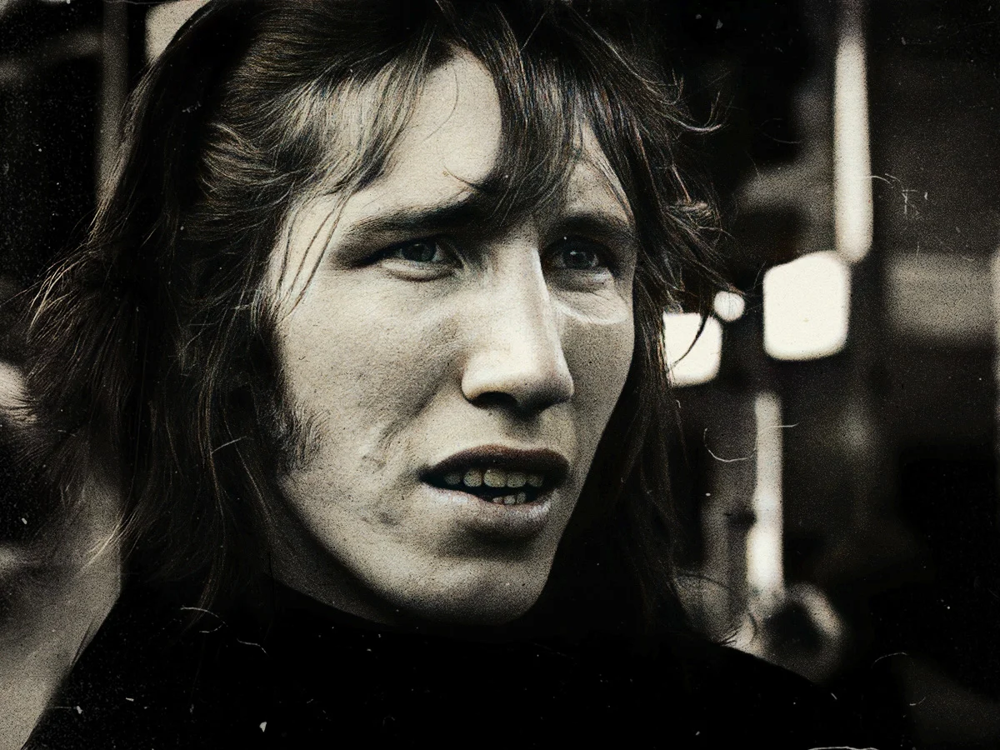
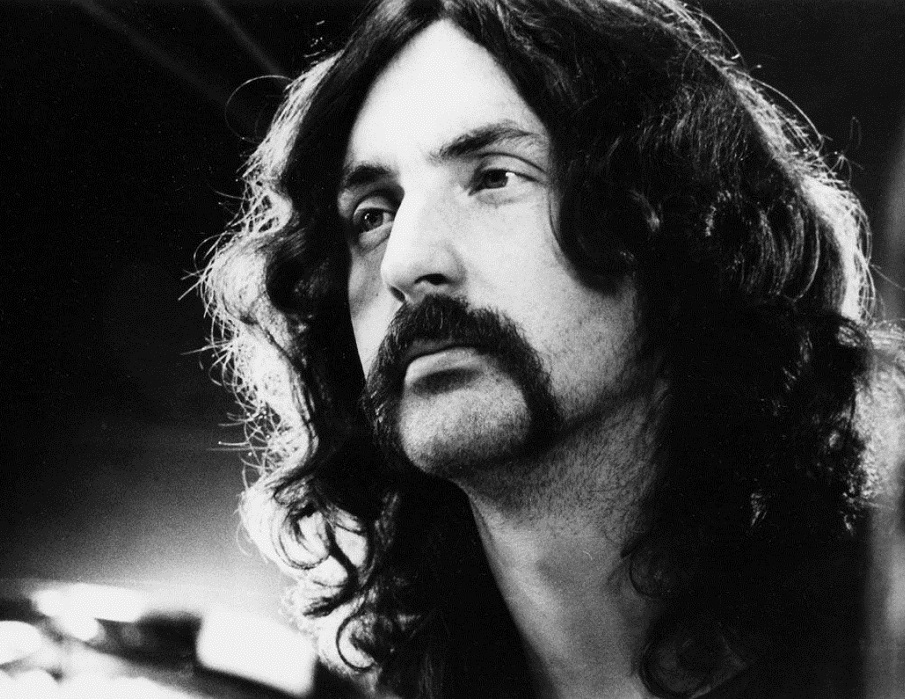

-

Syd Barrett
-

Roger Waters
-
David Gilmour
-
 Richard Wright
Richard Wright -

Nick Mason
Laisse-moi te raconter l'histoire mouvementée de ce groupe légendaire qui a redéfini la musique rock. Les Pink Floyd ont marqué de manière indélébile le paysage musical depuis leur formation en 1965 à Londres.
Tout a commencé avec Syd Barrett, Roger Waters, Richard Wright, Nick Mason et le regretté Richard "Rick" Wright. Ensemble, ils ont créé des sons psychédéliques qui ont captivé une génération entière, notamment avec leur premier album "The Piper at the Gates of Dawn" en 1967.
L'âge d'or des Pink Floyd a débuté avec l'arrivée de David Gilmour en 1968, qui a rejoint le groupe aux côtés de Syd Barrett. Après le départ de Barrett, les Floyds ont continué à expérimenter et à innover, donnant naissance à des albums emblématiques tels que "The Dark Side of the Moon" en 1973. Cet album a révolutionné la musique et demeure l'un des albums les plus vendus de tous les temps.
Le groupe a poursuivi sa quête artistique avec "Wish You Were Here" en 1975, "Animals" en 1977, et "The Wall" en 1979. Ce dernier, écrit principalement par Roger Waters, est un opéra-rock qui explore des thèmes profonds tels que l'aliénation, la guerre et l'isolement. Les concerts de "The Wall" étaient des spectacles grandioses, avec un véritable mur construit devant le public.
Malheureusement, les tensions internes ont mené au départ de Roger Waters en 1985, mais le groupe a continué à produire de la musique remarquable, avec des albums tels que "A Momentary Lapse of Reason" et "The Division Bell". Leurs tournées mondiales étaient légendaires et ont conquis des millions de fans à travers le globe.
En 2005, une réunion historique a eu lieu lors du concert "Live 8" à Londres, réunissant Roger Waters, David Gilmour, Nick Mason et Richard Wright pour la dernière fois. Richard Wright nous a malheureusement quittés en 2008, mais leur héritage perdure.